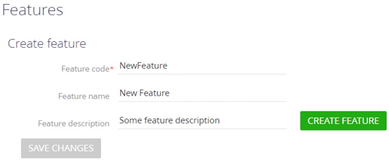
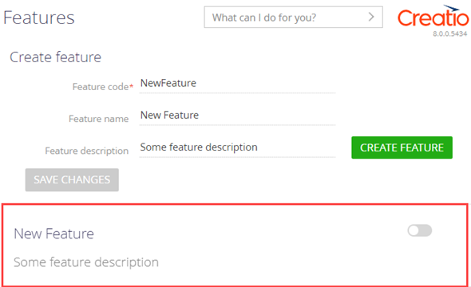

Feature toggle — техника разработки программных продуктов. Назначение Feature toggle — возможность подключения дополнительной функциональности в работающем приложении.
В Creatio Feature toggle использует непрерывную интеграцию, которая позволяет сохранить работоспособность приложения и скрыть функциональность на стадии разработки. В исходном коде приложения присутствует блок с дополнительной функциональностью и условный оператор, который определяет состояние подключения функциональности.
Понятие Feature toggle описано на Википедии.
Хранить сведения о функциональности
Сведения о функциональности хранятся в базе данных приложения.
Таблицы базы данных, которые хранят информацию о функциональности:
- [Feature] — перечень функциональности, которая доступна для подключения/отключения. По умолчанию таблица пуста.
- [AdminUnitFeatureState] (колонка [FeatureState]) — информация о состоянии функциональности (подключена/отключена). Таблица [AdminUnitFeatureState] связывает таблицы [Feature] и [SysAdminUnit] базы данных. Таблица [SysAdminUnit] содержит информацию о пользователях и группах пользователей приложения.
Диаграмма взаимосвязи таблиц базы данных, которые хранят информацию о функциональности, представлена на рисунке ниже.
Основные колонки таблицы [Feature] базы данных приведены в таблице ниже.
| Колонка | Тип | Описание |
|---|---|---|
| [Id] | uniqueidentifier | Уникальный идентификатор записи. |
| [Name] | nvarchar(250) | Имя функциональности. |
| [Code] | nvarchar( 50 ) | Код функциональности. |
Основные колонки таблицы [AdminUnitFeatureState] базы данных приведены в таблице ниже.
| Колонка | Тип | Описание |
|---|---|---|
| [Id] | uniqueidentifier | Уникальный идентификатор записи. |
| [FeatureId] | uniqueidentifier | Уникальный идентификатор записи из таблицы [Feature]. |
| [SysAdminUnitId] | uniqueidentifier | Уникальный идентификатор записи пользователя. |
| [FeatureState] | int | Состояние функциональности (1 — подключена, 0 — отключена). |
Подключить дополнительную функциональность
Способы подключения дополнительной функциональности:
- Для текущего пользователя приложения.
- Для всех пользователей приложения.
Подключить функциональность для текущего пользователя приложения
-
Перейдите на страницу Функциональность (Features), которая используется для точечного подключения функциональности.
- Переключите соответствующий переключатель функциональности, которую планируется подключить.
- Нажмите кнопку Сохранить изменения (Save changes).
Всплывающая подсказка отображает статус функциональности для группы пользователей, в которую входит текущий пользователь. Подключение функциональности для текущего пользователя не меняет ее статус для группы пользователей. Т. е. для текущего пользователя создается дополнительное правило приоритет которого выше, чем приоритет правила для группы пользователей, в которую входит текущий пользователь.
Пример страницы Функциональность (Features) приведен на рисунке ниже.
Подключить функциональность для всех пользователей приложения
Чтобы подключить функциональность для всех пользователей приложения, выполните SQL-запрос к базе данных, который приведен ниже.
featureCode — переменная, которая содержит необходимое имя функциональности.
С помощью SQL-запроса Creatio позволяет подключить функциональность для группы пользователей и отключить функциональность для текущего пользователя и наоборот.
Чтобы отключить функциональность для всех пользователей приложения, выполните SQL-запрос к базе данных, в котором для колонки [FeatureState] таблицы [AdminUnitFeatureState] установите значение 0.
Реализовать пользовательскую функциональность
-
Добавьте пользовательскую функциональность.
- Перейдите на страницу Функциональность (Features), которая используется для точечного подключения функциональности.
-
Заполните свойства добавляемой функциональности:
- Код функциональности (Feature code) — код пользовательской функциональности, которую планируется добавить (обязательное свойство).
- Имя функциональности (Feature name) — имя пользовательской функциональности, которую планируется добавить.
- Описание функциональности (Feature description) — описание пользовательской функциональности, которую планируется добавить.
 - Нажмите кнопку Добавить функциональность (Create feature).
В результате пользовательская функциональность добавлена в реестр страницы Функциональность (Features).
 -
Реализуйте пользовательскую функциональность в исходном коде. Пользовательская функциональность определяется в блоке условного оператора, который проверяет состояние подключения функциональности (колонка [FeatureState] таблицы [AdminUnitFeatureState]).
Варианты реализации пользовательской функциональности:
- На front-end стороне. Для этого воспользуйтесь инструкцией, которая приведена в пункте Реализовать пользовательскую функциональность (front-end).
- На back-end стороне. Для этого воспользуйтесь инструкцией, которая приведена в пункте Реализовать пользовательскую функциональность (back-end).
Реализовать пользовательскую функциональность (front-end)
- Создайте схему модели представления. Для этого воспользуйтесь инструкцией, которая приведена в статье Клиентский модуль.
-
В дизайнере модуля добавьте исходный код. Для этого используйте шаблон, который приведен ниже.
Для удобства использования в базовой схеме BaseSchemaViewModel модели представления определен метод getIsFeatureEnabled. Поэтому можно заменить метод Terrasoft.Features.getIsEnabled на this.getIsFeatureEnabled("КодФункциональности").
- На панели инструментов дизайнера модуля нажмите Сохранить (Save).
Чтобы пользовательская функциональность отобразилась в клиентском коде и загружалась браузером на front-end стороне, обновите страницу.
Реализовать пользовательскую функциональность (back-end)
- Создайте схему исходного кода. Для этого воспользуйтесь инструкцией, которая приведена в статье Исходный код.
-
В дизайнере исходного кода добавьте исходный код.
Класс Terrasoft.Configuration.FeatureUtilities предоставляет набор расширяющих методов класса UserConnection, которые позволяют использовать функциональность Feature toggle в схемах исходного кода на back-end стороне приложения. Для этого используйте шаблон, который приведен ниже.
-
Установите состояние функциональности, вызвав метод SetFeatureState. Для этого используйте шаблон, который приведен ниже.